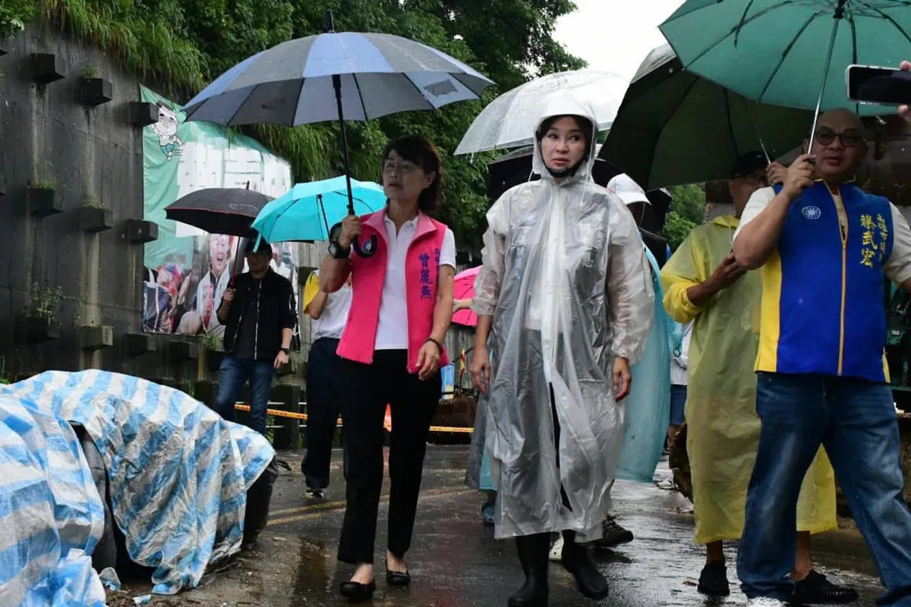

@prof.kochihen:高雄市連日豪雨，昨日下午小港松富街發生土石崩落意外，大量土石沖垮擋土牆，崩落的土石就在民眾家門前，第一時間我已經掌握訊息，並請黨籍議員前往關心，也先讓市府團隊盡快處理。 高雄今日凌晨起再降暴雨，我擔心災害擴大，臨時排開行程，與曾麗燕議員、蔡武宏 議員與陳麗娜議員前往現場，並與山明里陳阿子 里長一同關心。市府初步已緊急疏散部分居民，但豪雨未止，我們也請市府評估是否需再把警戒範圍擴大，並盡快做災害潛勢評估。 守護市民安全是首要之務，我們支持市府率先防災，若有任何需檢討、監督、協助之處，留待日後再做討論，也請住在附近市民朋友注意安全，配合市府引導指揮。 也祈求大雨盡快過去，高雄一切平安。